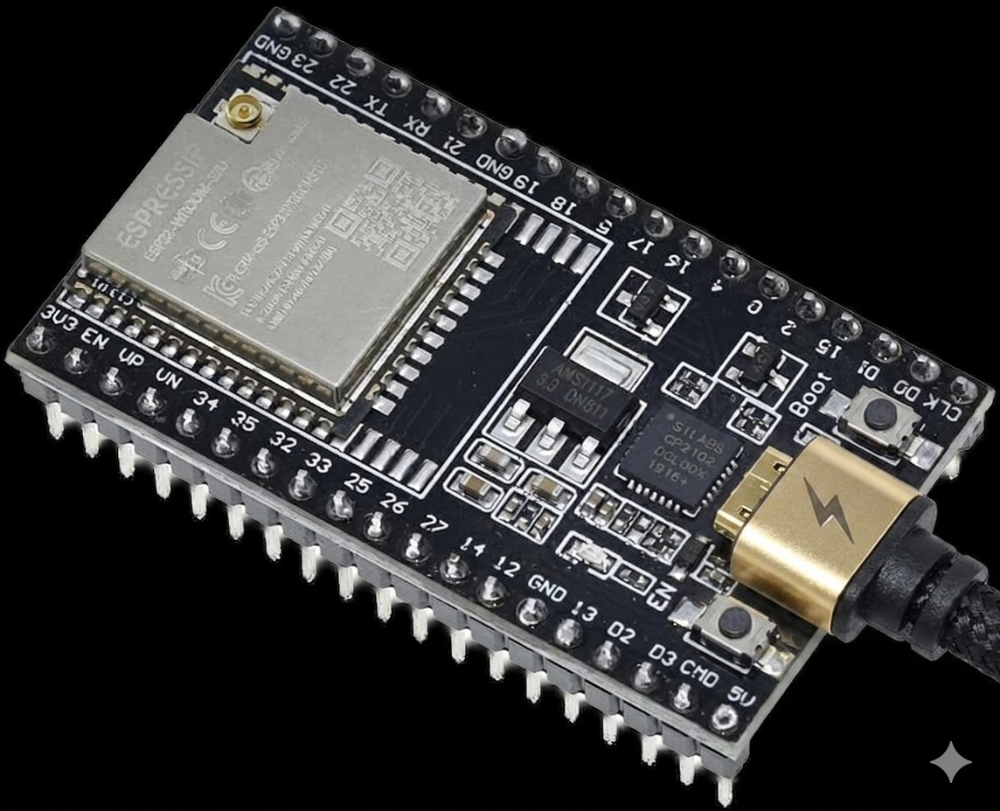
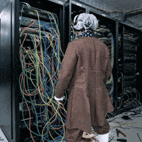

Blue Noise is a critical intervention and artistic exploration
that takes the form of a Bluetooth jammer. It engages with
the increasing tendency in modern society to isolate ourselves
from the acoustic environment through wireless, ever-smaller
headphones and audio devices.

1. Connect the ESP device to your PC using a USB cable.
Ensure the cable is a data cable and not just a charging cable,
as a data connection is required for the computer to recognize the board.

2. Select the Dual NRF24L01 VSPI and HSPI pins checkbox and click Connect:
